Style Vault / Category / Photography
Photography 18
Lens-based pictures and photo-art - light, grade, staged scenes, miniatures.
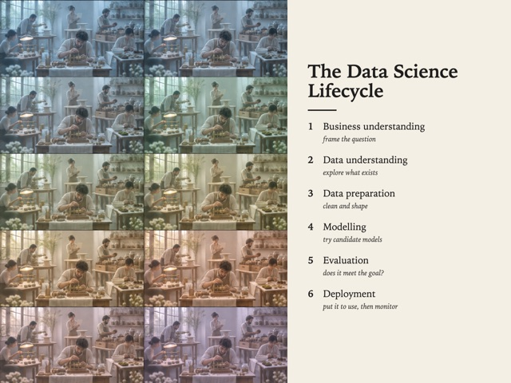
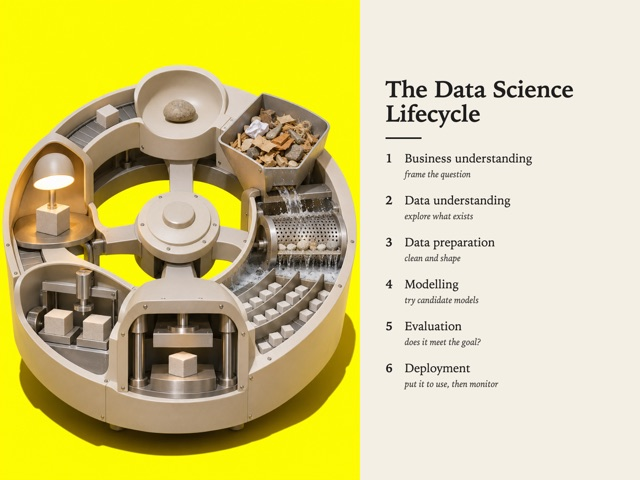
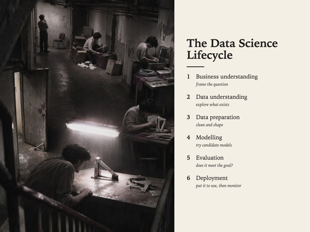
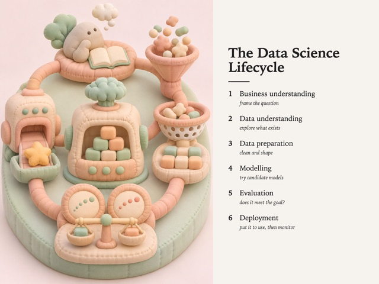
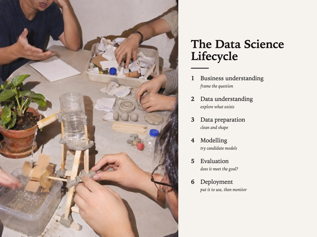
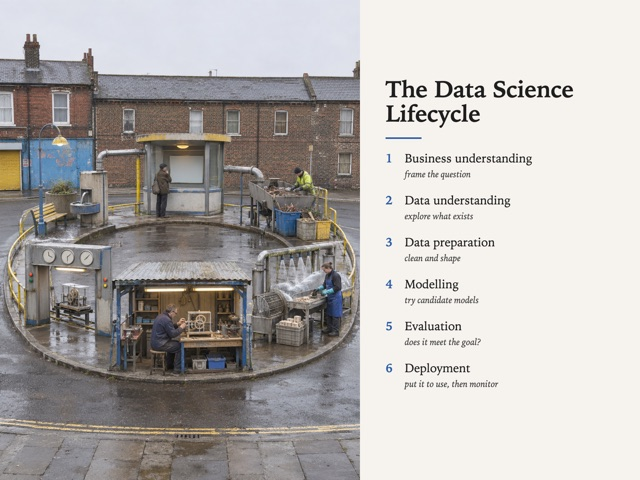
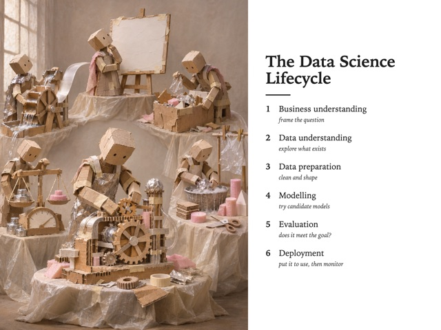
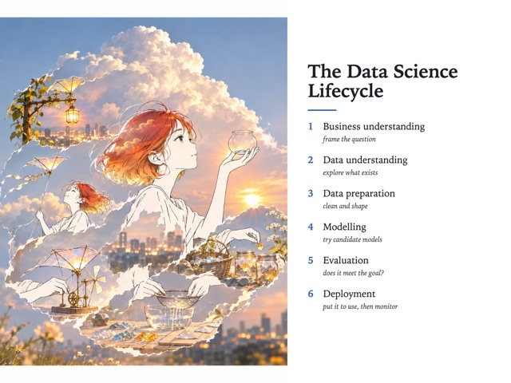
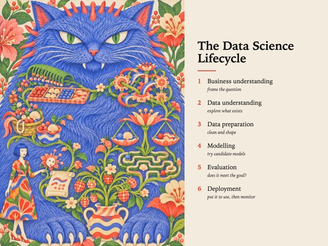

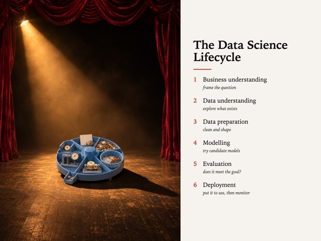
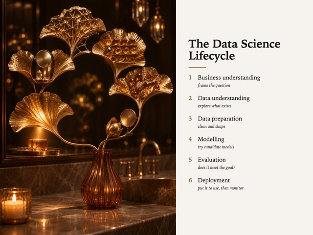

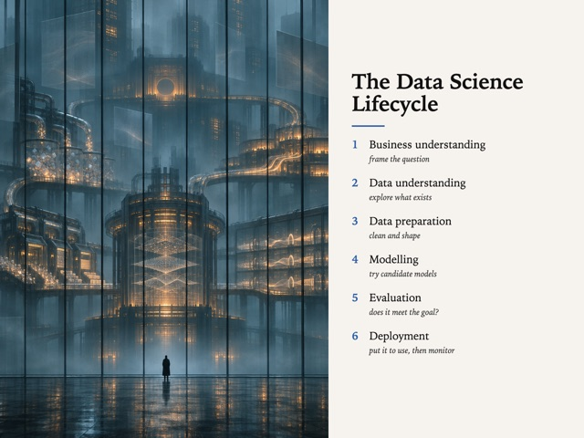
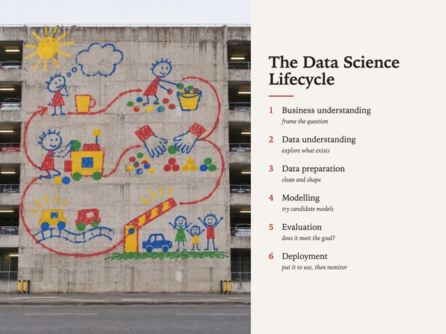


| Style | Audience | Category | Formats | Own work |
|---|---|---|---|---|
| Colour Grade Study SV-003 | Classroom | Photography | illustration, carousel | yes |
| One Loud Object SV-006 | Feed | Photography | poster, illustration | yes |
| Moody Grain SV-008 | Gallery | Photography | illustration, poster | yes |
| Squish Still Life SV-012 | Team | Photography | illustration, card | yes |
| Flash Reality SV-013 | Feed | Photography | illustration, card | yes |
| Straight-Faced Nonsense SV-015 | Classroom | Photography | illustration, card | yes |
| Made Of Other Things SV-019 | Feed | Photography | illustration, poster | yes |
| Sketch-Photo Interfusion SV-022 | Feed | Photography | illustration, poster | yes |
| Colossal Fur Deadpan SV-028 | Team | Photography | illustration, poster | yes |
| Shoreline Abstract SV-042 | Gallery | Photography | illustration, poster | yes |
| Opera For Nothing SV-044 | Team | Photography | illustration, poster, card | yes |
| Gilded Ginkgo Hour SV-045 | Gallery | Photography | poster, card, style-study | yes |
| One Spot All Year SV-059 | Gallery | Photography | illustration, poster | yes |
| Vertical Haze Sublime SV-061 | Stage | Photography | illustration, poster | yes |
| Crayon On Concrete SV-065 | Feed | Photography | illustration, poster | yes |
| Pressed By Sunlight SV-066 | Gallery | Photography | card, style-study | yes |
| Florist Is An Engineer SV-069 | Gallery | Photography | poster, illustration | yes |
| Mineral Wound SV-070 | Feed | Photography | poster, illustration | yes |
No style matches.